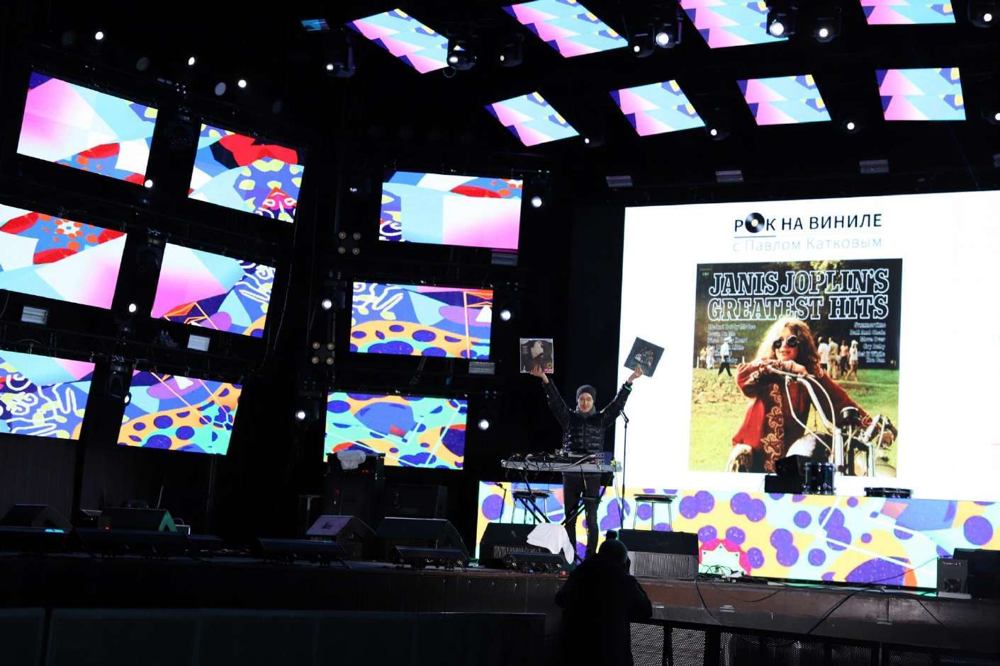
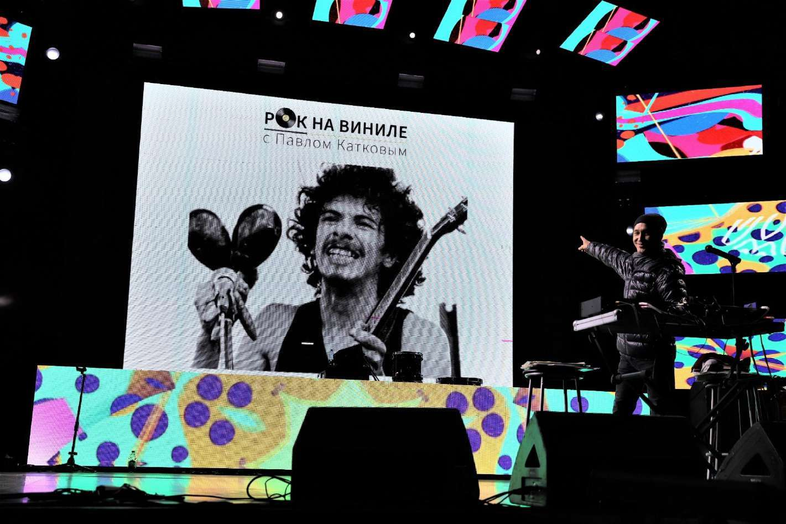
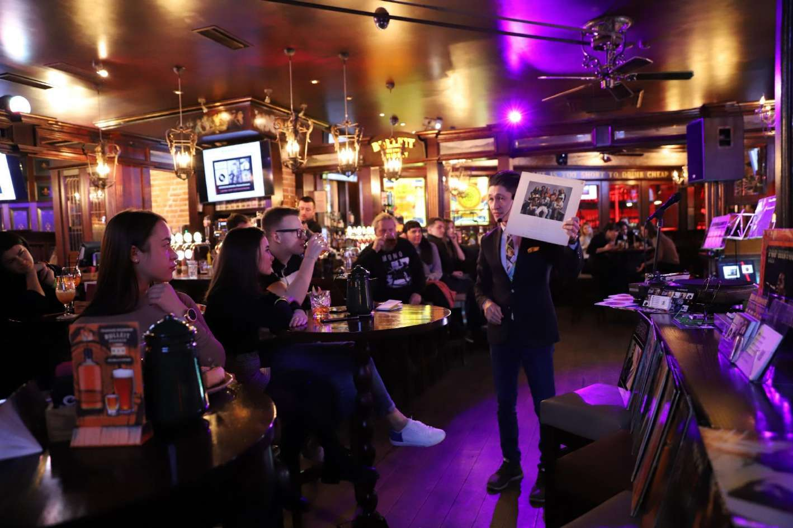
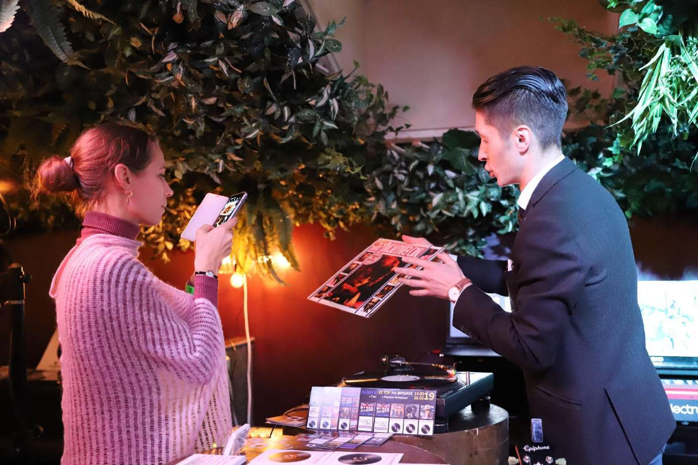
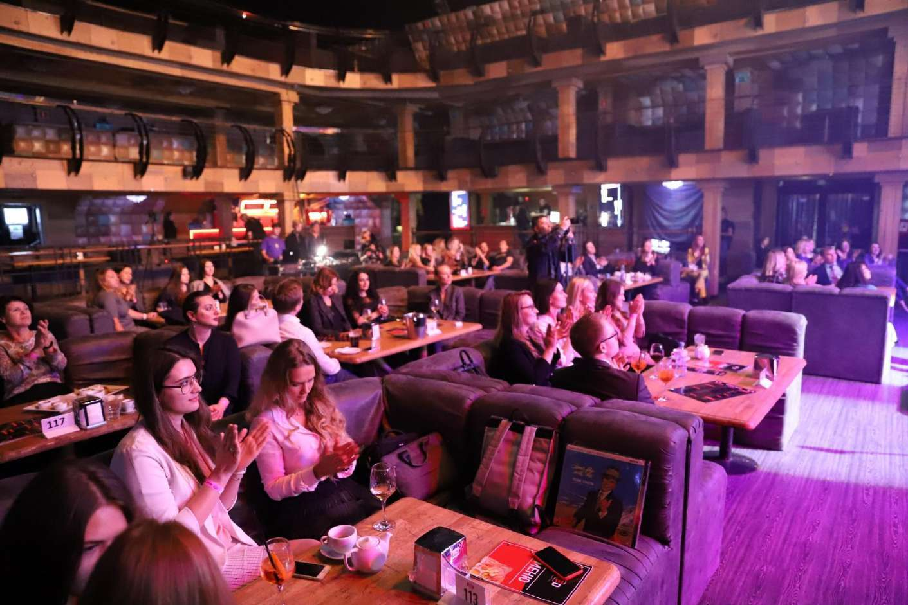
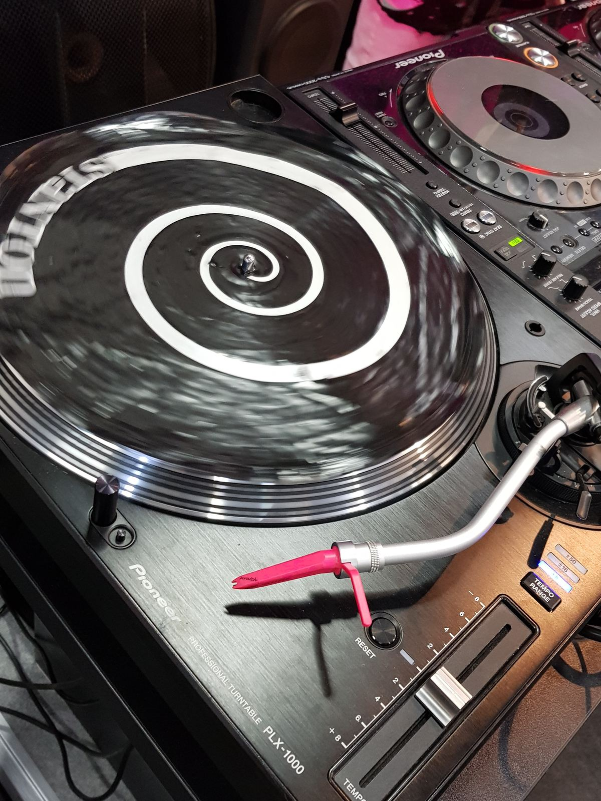
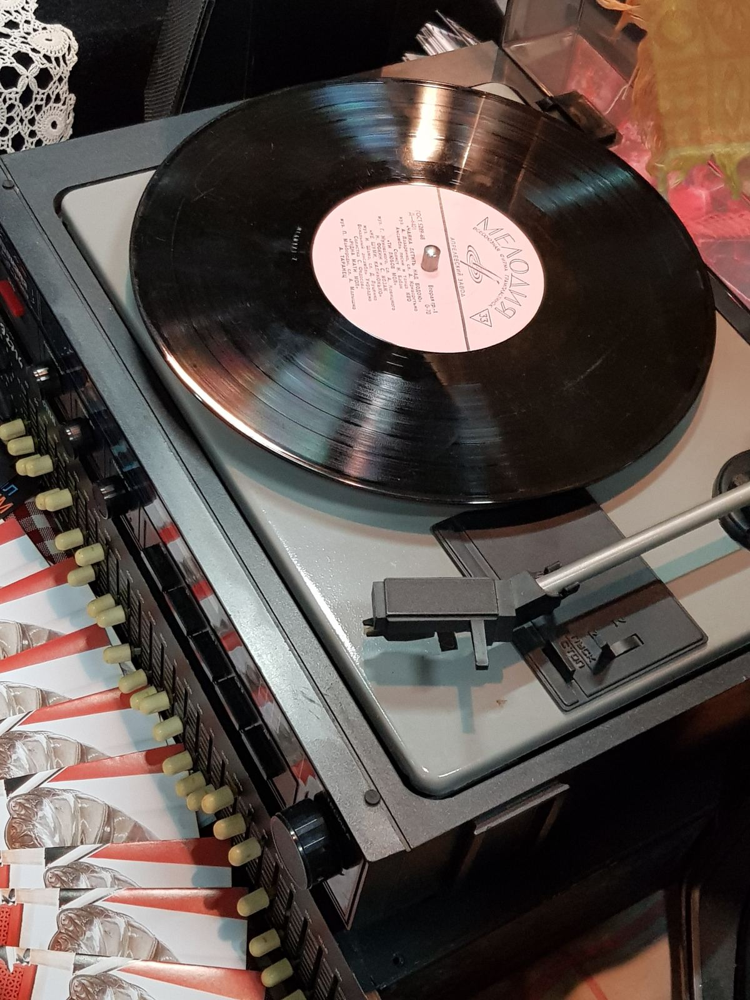
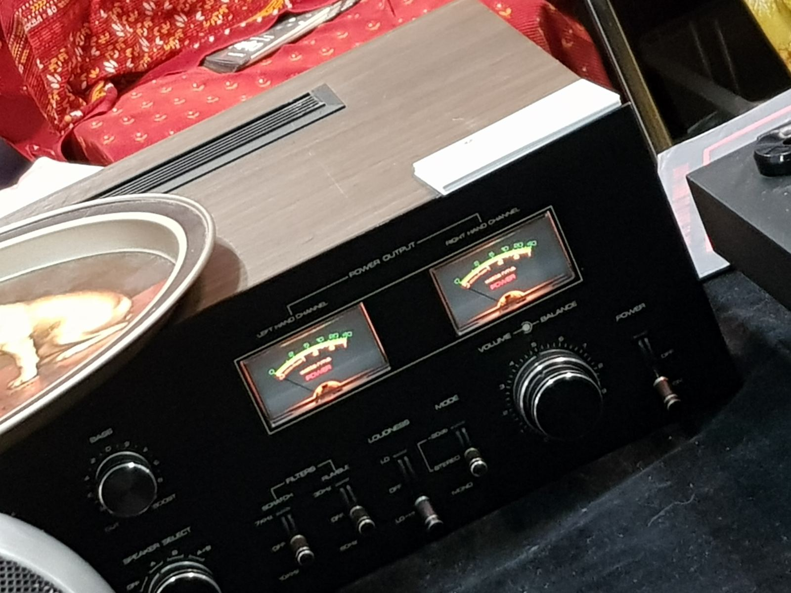
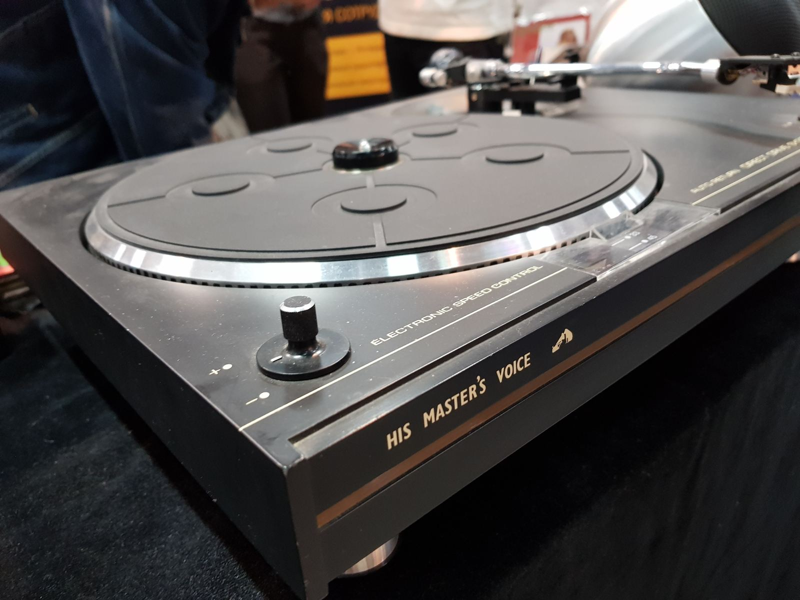
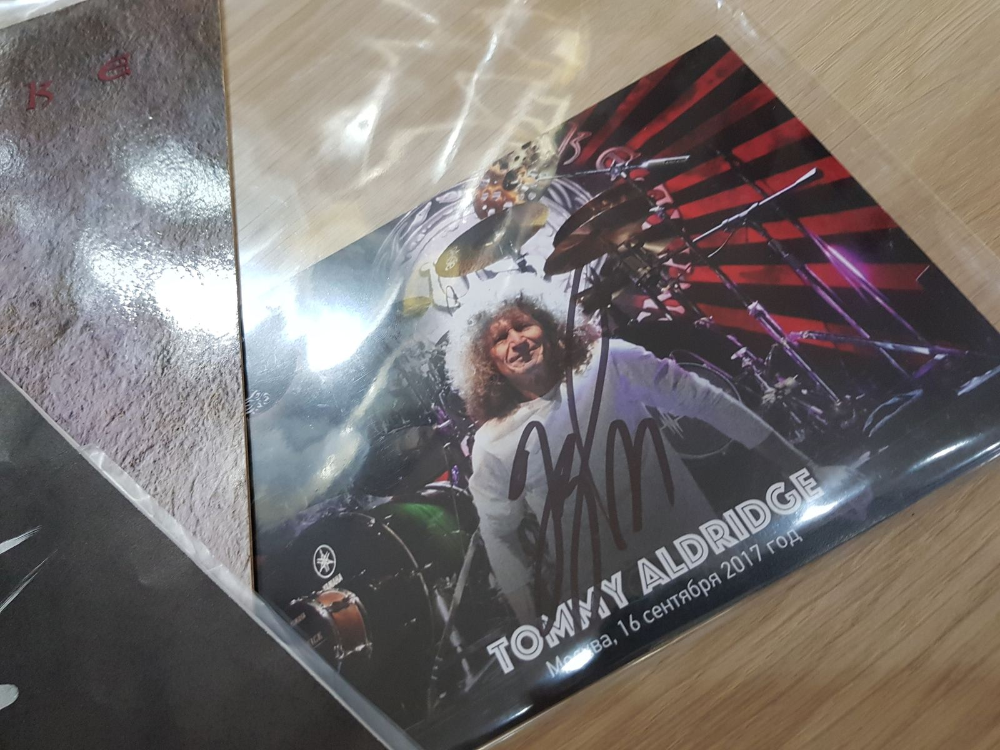

01 Авторское виниловое шоу Павла Каткова
Живая история звука
Разговорно-музыкальное шоу о музыке на виниловых пластинках. Оригинальные носители, винтажный виниловый тракт, рассказ о том, как создавались великие альбомы, — и интервью со звёздами прямо на сцене.
02 Что такое «ЗВУК НА ВИНИЛЕ»
«ЗВУК НА ВИНИЛЕ» с Павлом Катковым — уникальное музыкальное виниловое шоу о музыке на виниловых пластинках. Ведущий рассказывает о создании великих альбомов, раскрывает факты из биографий музыкантов, показывает оригинальные пластинки тех лет, редкие релизы прошлого и новинки виниловой сцены.
В программе звучат The Beatles, The Rolling Stones, The Who, The Doors, Deep Purple, Led Zeppelin, Black Sabbath, Uriah Heep, Genesis, Yes, King Crimson, Jethro Tull, David Bowie, Camel, Barclay James Harvest, Chicago, Van Halen, AC/DC, Aerosmith — и другие исполнители великой виниловой эпохи. Отдельные выпуски посвящены року 80–90-х и музыке наших дней.
Демонстрируются не только известные альбомы, но и редкости: «бутлеги», синглы, коллекционные работы, лимитированные издания. Шоу гастролирует по стране — Москва, Сочи, Калуга — и было представлено на международной выставке NAMM Musikmesse.
Подробно о проекте →- 2017первое шоу и дебют на NAMM Musikmesse во Франкфурте-на-Майне
- 6жанровых программ: рок, блюз, джаз, фанк, рейв, рэп
- 8лет на сцене — от клубов до стадионных площадок
- №1резидент Клуба Алексея Козлова — джаз-клуба №1 в рейтинге All About Jazz
03 Как устроено шоу
Шесть номеров
одного вечера
Это не диджей-сет и вообще не диджеинг. Каждое шоу собрано из номеров, в которых зал не наблюдает, а участвует: выбирает пластинки, сравнивает фонограммы, выигрывает билеты и задаёт вопросы гостям.
- Номер 01 Пластинки с выставки Публика сама выбирает, что прозвучит следующим: пластинки стоят на выставке обложек прямо в зале.
- Номер 02 Звуковой эксперимент Зритель поднимается на сцену и в наушниках сравнивает разные фонограммы одной записи, а зал по выражению его лица угадывает победителя.
- Номер 03 Обратная связь Зрительница вслепую выбирает победителя, который получает в подарок билет на следующее шоу.
- Номер 04 Интервью на сцене Гость — музыкант, продюсер, звукорежиссёр или дизайнер — отвечает на вопросы среди проигрывателей и пластинок, а не в студии.
- Номер 05 Выставка обложек Оригинальные конверты, развороты и вкладыши: альбом как арт-объект, а не как набор файлов.
- Номер 06 Рассказ История альбома и записи, факты из биографий, редкости, «бутлеги», синглы и лимитированные издания.
04 Жанры и форматы
- Уникальность — «изобретение» жанра
- Разговорность — не диджей-молчун и вообще не диджей
- Музыкальность — топовый звук с оригинальных носителей
- Шоу — звук, свет, экраны, эффектная аппаратура, выставка обложек, интервью со звёздами на сцене
- Mice & Event: корпоративные мероприятия и деловые события
- Спонсорские возможности и рекламные интеграции — до, на и после шоу
- Деловые сообщества: строительство, маркетинг, банки, нефть и газ — Business Vinyl Family
- Бары, пабы, рестораны, виниловые магазины и культурные центры: программа, лекция или виниловая вечеринка
«Это фантастическое виниловое шоу! У нас в Англии такого нет»
05 Хроника
Восемь лет
на сцене
От первых клубных программ до корпоративных Legal Vinyl Party и онлайн-тусовки меломанов четырёх стран.
Первые шоу. Выступления на Colisium в Сочи и в «Горки Панорама». Шоу «Рок на виниле» представлено на NAMM Musikmesse во Франкфурте-на-Майне — крупнейшей музыкальной выставке мира.
Шоу впервые звучит в Клубе Алексея Козлова и становится его резидентом (джаз-клуб №1 в рейтинге All About Jazz). Июнь — площадка BACKSTAGE концертного зала «Роза Холл» в Сочи. Запуск серии «Блюз на виниле» с концертами звёзд британского блюза. Шоу открыло Led Zeppelin fest к 50-летию группы и творческий вечер Игоря Бутмана.
Совместно с вице-президентом МТС Русланом Ибрагимовым запущен корпоративный формат Legal Vinyl Party. Гости — юристы компаний из списка Forbes: СУЭК, МТС, РЖД, Ренова, Ростелеком, ПИК, Вымпелком, ВЭБ, Tele2, Роза Хутор, Nokia, ТАСС, ВШЭ. Сопровождение вечера Экспертного совета премии Право.ру 300.
На сцену поднимаются музыканты «Арсенала», «Морального кодекса», «Лиги блюза», инструменталисты концертных составов Роберта Планта, Энни Леннокс, Стинга, Стиви Уандера. Эксклюзивное интервью проекту даёт Алексей Козлов.
Онлайн-тусовка меломанов KEEP TALKING: Россия, Франция, Канада, Чехия.
Возвращение на сцену: Legal Vinyl Party, «Советская коллекция винила», Legal Vinyl Show и Legal Vinyl Talks.
06 Как это выглядит





Наведите курсор, чтобы увидеть кадр в цвете.
07 Виниловый тракт
Техника —
часть номера
Важно не только что играет, но и на чём. О каждом аппарате в тракте можно рассказать историю — и на шоу мы её рассказываем.
-
- Проигрыватель
- Technics SL-1210 Первые устройства линейки вышли ещё в 1972 году, когда Deep Purple впервые исполнили Smoke On The Water. Аппарат настолько прост и надёжен, что служит диск-жокеям всего мира до сих пор.
-
- Иглы и шеллы
- Victor · Ortofon Victor — уникальный винтаж конца 70-х. Ortofon — легендарный «крючконосый» шелл запатентованного внешнего вида, мгновенно узнаваемый виниломанами всего мира.
-
- Фонокорректор
- Eridan Audio Pulsar Сердце тракта. Российский hi-end: именно фонокорректор определяет, каким зал услышит первопресс.
-
- Носители
- Оригинальные пластинки Первопрессы и переиздания, редкости, «бутлеги», синглы, коллекционные и лимитированные издания — из личной коллекции автора.





08 Площадки
- Клуб Алексея Козловарезидент с 2018 · Москва
- Hard Rock CafeМосква
- Роза Холл · BACKSTAGEСочи
- Роза ХуторКрасная Поляна, Сочи
- Горки-городСочи
- Дом винтажной музыкиВДНХ, Москва
- ДЕПО Три вокзалаМосква
- Insomniaфестиваль, Калуга
- Taste of MoscowЛужники, Москва
- Hi-Fi Винтажсигарный клуб, Москва
- NAMM MusikmesseФранкфурт-на-Майне
- ColisiumСочи
- 6популярных жанров
- 8лет успешной работы
- Полные залы на топовых площадках: Клуб Алексея Козлова, Hard Rock Cafe, «Дом винтажной музыки»
- Благодарная аудитория из списка Forbes и довольные спонсоры — крупнейшие бренды мира
- Десятки внежанровых программ и постоянно растущая аудитория слушателей
Приглашаем к сотрудничеству организаторов мероприятий, рекламодателей, агентства, ассоциации и сообщества.
09 Читать и смотреть
Длинные тексты автора — о разнообразии жанров, географии пластинок, секретах винилового тракта и интервью с Алексеем Козловым — в блоге.
10 Друзья и партнёры


11 Пригласить шоу
Расскажите
о событии
Опишите площадку, дату и аудиторию — предложим формат программы, состав тракта и продолжительность. Отдельно обсуждаем спонсорские интеграции и записи интервью.
- Автор и ведущийПавел Катков
- Телефон+7 (985) 765-34-22
- WhatsApp · Telegram+7 (985) 765-34-22
- Почтаkatkov@rockonvinyl.ru
- ВКонтактеvk.com/rockonvinyl
Живые программы всегда проходят в новых местах. Чтобы узнать о площадке и дате заранее — подпишитесь на анонсы.